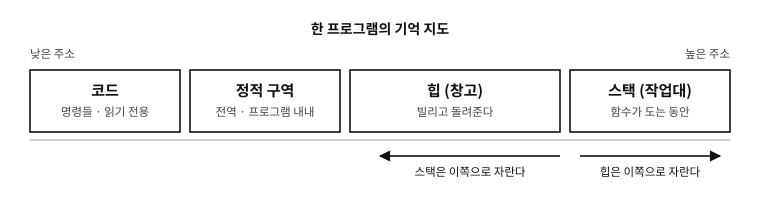

2 기억의 구역들 — 프로그램은 어디에 무엇을 두는가
먼저 알아야 할 것
돌아보기
1장에서 프로그래밍이란 “단순한 지시들의 목록을 적는 일”이라 했다. 그러면 그 지시들과, 지시가 다루는 값들은 실행 중에 어디에 있는가?
답. 둘 다 기억(메모리) 안에 있다 — 그런데 같은 자리에 섞여 있지는 않다. 프로그램의 기억은 성격이 다른 구역들로 나뉘고, 구역마다 규칙이 다르다. 어떤 구역은 프로그램이 끝날 때까지 그대로 있고, 어떤 구역은 함수 하나가 도는 동안만 살며, 어떤 구역은 프로그래머가 직접 빌리고 돌려준다. 이 밑그림을 먼저 그려 두면 이후의 이야기가 전부 제자리를 찾는다.
이 장의 필요성과 맥락
malloc, 스택 넘침 — 이 「어디에 놓이는지」를 모르는 채 외워야 할 용어가 된다. 반대로 구역의 이름과 성격만 먼저 잡아 두면 그 낱말들이 자리를 가진 것으로 들어온다. 그래서 C 문법이 한 줄도 나오지 않는 이 장이 1부에 있다.이 장이 끝나면
이 장에서 답할 질문
- 왜 굳이 나누는가? 기억은 그냥 한 덩어리 아닌가?
- 그러면 “초기화하지 않은 값은 0”이라는 말은 어디서 나온 규칙인가?
- 그러면 이 장에서 배운 밑그림은 믿을 수 없는 것인가?

그림 2.1 — 한 프로그램이 쓰는 기억의 배치. 이 그림 위에서 이후의 거의 모든 장이 읽힌다.
2.1 네 구역, 하나의 비유
책상에서 일하는 사람을 떠올리면 그림이 선다.
| 구역 | 비유 | 무엇이 놓이는가 | 언제까지 사는가 |
|---|---|---|---|
| 코드 | 작업 지시서 | 프로그램의 명령들 | 프로그램 내내(대개 못 고친다) |
| 정적 구역 | 붙박이 선반 | 프로그램 전체가 공유하는 값 | 프로그램 내내 |
| 스택 | 작업대 | 지금 하는 일에 필요한 임시 값 | 그 일이 끝날 때까지 |
| 힙 | 창고 | 크기·수명을 직접 정하는 값 | 돌려줄 때까지 |
표 2.1
코드는 읽기만 한다. 지시서를 실행 중에 고쳐 쓰는 일은 보통 금지되어 있다.
정적 구역은 프로그램이 시작될 때 자리를 잡고 끝날 때까지 그대로다. 어디서든 보이고 언제나 살아 있다는 것이 장점이자 위험이다 — 편리하지만, 아무 데서나 바뀔 수 있는 값은 추적하기 어렵다.
스택은 작업대다. 일 하나를 시작하면 그 일에 필요한 것들을 작업대에 펼치고, 일이 끝나면 통째로 치운다. 빠르고 자동이지만 좁다 — 그리고 치운 뒤에는 그 자리의 물건을 다시 찾을 수 없다.
힙은 창고다. “이만큼 빌려 주시오”라고 청하면 자리를 내주고, 다 쓰면 돌려줘야 한다. 크기를 실행 중에 정할 수 있고 원하는 만큼 오래 살릴 수 있는 대신, 빌린 것을 돌려주는 책임이 사람에게 있다.
문. 왜 굳이 나누는가? 기억은 그냥 한 덩어리 아닌가?
답. 물리적으로는 그렇다 — 5장에서 볼 사물함 복도 하나다. 나누는 것은 약속 이고, 그 약속이 두 가지를 준다.
첫째, 자동 관리다. 함수 하나가 쓰는 임시 값들을 한 구역(스택)에 모아 두면, 그 함수가 끝날 때 통째로 치울 수 있다. 하나하나 챙길 필요가 없다.
둘째, 보호다. 코드 구역을 읽기 전용으로 두면 프로그램이 실수로(또는 공격자가 일부러) 자기 명령을 고쳐 쓰는 일을 막을 수 있다. 구역마다 권한을 다르게 주는 것이 현대 운영체제의 기본 방어다.
2.2 정적 구역이 둘로 나뉘는 이유 — bss라는 이상한 이름
실무에서는 정적 구역이 다시 둘로 갈린다. 이름이 낯설지만 사연은 단순하다.
- 초깃값이 있는 것 — 예컨대 “이 값은 처음에 7이다”라고 정해 둔 것. 그 7이 실행 파일 안에 실제로 들어 있어야 한다.
- 초깃값이 0인 것 — 처음 값이 0이라면, 파일에 0을 잔뜩 적어 둘 이유가 없다. “이만큼을 0으로 채워 달라”는 숫자 하나만 적어 두고, 실제로 채우는 일은 프로그램이 시작될 때 한다.
두 번째 구역의 이름이 bss다. 1950년대 어셈블러 명령어의 약자에서 왔고, 뜻은 잊혔지만 이름만 반세기를 건너왔다. 이 구별 덕에 “백만 칸짜리 표를 전부 0으로 시작한다”는 프로그램의 실행 파일이 커지지 않는다.
문. 그러면 “초기화하지 않은 값은 0”이라는 말은 어디서 나온 규칙인가?
답. 정적 구역에 한해서 그렇다 — 그리고 그 0은 공짜가 아니라 누군가 채워 준 것이다. 운영체제가 0으로 채워진 자리를 주거나, 운영체제가 없는 기계에서는 프로그램의 시작 코드가 직접 루프를 돌아 0으로 채운다.
반대로 작업대(스택)의 임시 값은 0이 아니다. 방금 다른 일이 쓰고 간 자리를 그대로 물려받으므로, 무엇이 남아 있을지 알 수 없다. 이 차이가 C를 배우는 사람이 가장 자주 넘어지는 자리 중 하나이고, 44장에서 정식으로 다룬다.
2.3 세 구역의 성격 대조
앞으로 계속 쓸 표다. 지금은 느낌만 잡아 두면 된다.
| 정적 | 스택 | 힙 | |
|---|---|---|---|
| 크기 정하는 때 | 번역할 때 | 번역할 때(대개) | 실행 중에 |
| 수명 | 프로그램 내내 | 그 일이 끝날 때까지 | 돌려줄 때까지 |
| 정리 | 자동 | 자동 | 사람이 직접 |
| 속도 | 빠름 | 가장 빠름 | 상대적으로 느림 |
| 크기 여유 | 고정 | 좁다(대개 몇 MiB) | 넓다 |
| 흔한 사고 | 아무 데서나 바뀜 | 넘침·죽은 자리 참조 | 누수·이중 반납 |
표 2.2
이 표의 마지막 줄이 이 책의 뒷부분 상당 분량을 차지한다. C가 강력하면서 위험하다는 평판은 대부분 이 세 구역의 규칙을 어겼을 때 벌어지는 일에서 나온다.
실제 사례. 작업대가 좁다는 것의 실감
창고(힙)가 수십 기가바이트인 오늘의 컴퓨터에서도 작업대(스택)는 좁다. 흔한 기본값이 리눅스에서 8 MiB, 윈도우에서 1 MiB다 — 전체 기억의 수천분의 일이다.
그래서 초보자가 겪는 첫 붕괴가 대개 여기서 난다. 큰 표를 작업대에 통째로 펼치려 하거나, 자기 자신을 끝없이 부르는 프로그램을 짜면 작업대가 넘치고 프로그램이 그 자리에서 죽는다 — 이름도 그대로 스택 오버플로다(세계에서 가장 유명한 프로그래밍 질문 사이트의 이름이 여기서 왔다). 자세한 숫자와 대처는 44장과 83장에서 다룬다.
흔한 오해. “메모리를 많이 쓰면 프로그램이 느려진다”
2.4 이 밑그림이 통하는 데까지
여기까지 그린 네 구역은 오늘 널리 쓰이는 기계에서 실제로 그렇게 생겼다. 리눅스· 윈도우·macOS 의 데스크톱과 서버, 그리고 그 위에서 도는 프로그램의 압도적 다수가 이 모양이다. 그러니 이 밑그림을 들고 다녀도 좋다.
다만 한 가지를 함께 알아 두어야 한다. ★ 이것은 C 언어가 요구한 모양이 아니다.
2.4.1 표준에는 「스택」이라는 낱말이 없다
C23 표준 문서를 처음부터 끝까지 훑어도 stack 이라는 낱말은 한 번도 나오지 않는다. heap 도 마찬가지다.1 놀랄 일이 아니다. 표준은 기계장치를 정하지 않고 지켜야 할 성질을 정하기 때문이다.
| 이 장에서 쓴 말 | 표준이 실제로 쓰는 말 |
|---|---|
| 스택에 잡힌다 | 자동 저장 기간(automatic storage duration) — 블록에 들어갈 때 생기고 나올 때 사라진다 |
| 정적 구역에 있다 | 정적 저장 기간(static storage duration) — 프로그램 내내 산다 |
| 힙에서 빌린다 | 할당된 저장 기간(allocated storage duration) — malloc 계열이 준다 |
| 스택 프레임이 쌓인다 | 재귀 호출이 허용된다 |
표 2.3
마지막 줄이 특히 뜻깊다. 표준은 스택을 요구하는 대신 이렇게 적는다.
“ 재귀적 함수 호출은 허용되어야 하며, 직접이든 다른 함수들의 사슬을 통한 간접이든 마찬가지다.2 ”
★ 차이가 결정적이다. 「스택을 두라」가 아니라 「재귀가 되게 하라」다. 스택은 그 요구를 만족시키는 가장 흔한 방법일 뿐, 유일한 방법이 아니다. 표준은 방법을 구현에 맡기고 결과만 요구한다 — 13·14장에서 볼 추상 기계라는 발상이 여기서도 작동한다.
2.4.2 실제로 다른 기계들 — 지금도 있다
「이론상 다를 수 있다」가 아니라 지금 팔리는 물건이 그렇다. 8비트 PIC 마이크로컨트롤러가 좋은 예다.
실제 사례. 스택이 있는데 쓸 수 없는 기계
마이크로칩의 8비트 PIC 계열에는 하드웨어 스택이 있다. 그런데 성질이 우리가 그린 작업대와 아주 다르다.
- 깊이가 고정이다. 중급 코어는 8단, 개선된 중급 코어는 16단이다. 그 이상 겹쳐 부르면 넘친다 — 늘릴 수 없다.
- ★ 거기에 값을 올릴 수 없다. 그 스택이 담는 것은 돌아갈 주소뿐이고, 프로그램이 밀어 넣거나 꺼내 볼 수단이 없다. 데이터 메모리와 아예 다른 물건이다.
그러면 지역 변수는 어디에 두는가. 컴파일러가 호출 관계를 미리 분석해 자리를 정해 둔다. 마이크로칩의 XC8 컴파일러는 이것을 컴파일된 스택(compiled stack)이라 부르고, 문서에 이렇게 적어 두었다 — 「정적으로 배치된다」, 그리고 재진입 모델을 지원하지 않는 장치에서는 「모든 함수가 컴파일된 스택을 쓰도록 부호화되며, 이들은 재진입하지 않는 함수다」.3
★ 여기서 앞 절의 표준 조항과 정면으로 부딪힌다. 재진입하지 않는 함수는 자기 자신을 다시 부를 수 없다. 표준이 「재귀는 허용되어야 한다」고 했는데, 이 구성에서는 그것이 공짜로 되지 않는다. 그래서 이런 환경의 컴파일러는 재귀가 필요하면 소프트웨어 스택을 따로 만들어 쓰거나(느리고 램을 먹는다), 아예 프로그래머에게 재귀를 쓰지 말라고 한다. 같은 문서가 그 사정도 적어 둔다 — 재귀 호출은 반복 횟수를 예측할 수 없으므로 「하드웨어 스택이 몇 단 필요한지도, 소프트웨어 스택을 얼마나 잡아야 하는지도 정할 수 없어, 스택 사용량을 안내할 수 없다」.
이것이 94장에서 다룰 프리스탠딩 환경의 실물이다. 표준이 요구하는 것을 하드웨어가 거저 주지 않을 때 무슨 일이 벌어지는지를 보여 준다.
역사를 보면 이런 기계가 오히려 흔했다.
| 기계·시대 | 무엇이 달랐나 |
|---|---|
| 초기 메인프레임(1950~60년대) | 호출 스택이라는 발상 자체가 표준이 아니었다. 함수마다 돌아갈 주소를 넣어 둘 고정된 칸을 두는 방식이 흔했고, 그러면 재귀가 원천적으로 불가능하다 |
| 초기 포트란·코볼 | 지역 변수를 정적으로 잡았다. 그래서 재귀를 지원하지 않았다 |
| 버로스 B5000(1961) | 반대 극단 — 스택이 하드웨어에 내장되어 명령어 집합 자체가 스택 기계였다 |
| 하버드 구조 | 코드와 데이터가 아예 다른 기억 장치에 있다. 「한 주소 공간을 넷으로 나눈다」는 그림이 성립하지 않는다 |
| 오늘의 8비트 MCU | 위 상자에서 본 그대로 |
표 2.4
문. 그러면 이 장에서 배운 밑그림은 믿을 수 없는 것인가?
답. 아니다. 두 가지를 나누어 두면 된다.
① 「어떻게 생겼는가」는 대개 맞는다. 이 책이 다루는 환경 — 데스크톱·서버· 스마트폰, 그리고 운영체제가 있는 대부분의 임베디드 — 에서는 이 네 구역 그림이 사실이다. 디버거를 열면 실제로 그렇게 보인다.
② 「반드시 그래야 하는가」는 아니다. 그래서 이 밑그림에 기대는 코드를 쓰면 안 된다. 스택이 아래로 자란다고 가정하거나, 지역 변수들이 기억 속에서 이웃해 있다고 가정하거나, 두 지역 변수의 주소를 견주어 순서를 판단하는 코드가 그런 것이다 — 전부 표준이 보장하지 않고, 실제로 기계마다 다르다(37장). 임베디드까지 넓힌 기억 배치는 83장에 있다.
★ 정리하면 이렇다. 밑그림은 이해를 위해 쓰고, 코드는 계약에 기대어 쓴다. 이 구별이 이 책 전체를 관통한다. 지금 이 장은 「이해를 위한 그림」을 그린 것이고, 그 그림이 어디까지 약속인지는 방금 표에서 갈라 두었다.
2.5 이 밑그림이 앞으로 쓰이는 곳
지금은 이름만 알아 두면 된다. 이 네 구역은 책 전체에서 계속 돌아온다.
| 어디서 | 무엇을 |
|---|---|
| 5·6장 | 주소와 정렬 — 구역들이 놓이는 복도의 지리 |
| 11장 | 기억의 사다리 — 같은 구역이라도 캐시에 따라 속도가 다르다 |
| 44장 | 수명과 저장 기간 — C의 문법이 이 구역들을 어떻게 부르는가 |
| 45장 | 동적 메모리 — 창고를 빌리고 돌려주는 규율 |
| 83장 | 운영체제와 임베디드에서의 실제 배치 |
| 84장 | 창고를 관리하는 할당자의 속 |
표 2.5
프로그램이 무엇을 어디에 두는지 보았다. 다음 장은 그 프로그램이 실행될 때 운영체제가 무엇을 해 주는지 — 프로그램과 프로세스의 차이, 그리고 프로세스가 어떻게 태어나는지 — 를 짧게 본다.
주
- ISO/IEC 9899:2024 의 널리 참조되는 작업 초안 N3220 전문 (759쪽)을 기계로 훑어 확인했다 —
stack0회,heap0회. 표준을 구하는 방법은 부록 D 에 있다. ↩ - ISO/IEC 9899:2024 §6.5.3.4(함수 호출). 원문: “Recursive function calls shall be permitted, both directly and indirectly through any chain of other functions.” ↩
- MPLAB XC8 C Compiler User’s Guide for PIC MCU (Microchip, DS50002737). 원문: “There is no equivalent method available for the compiled stack, which is statically allocated.” / “When compiling for those devices that do not support the reentrant function model, all functions are encoded to use the compiled stack, which are non-reentrant functions.” ↩